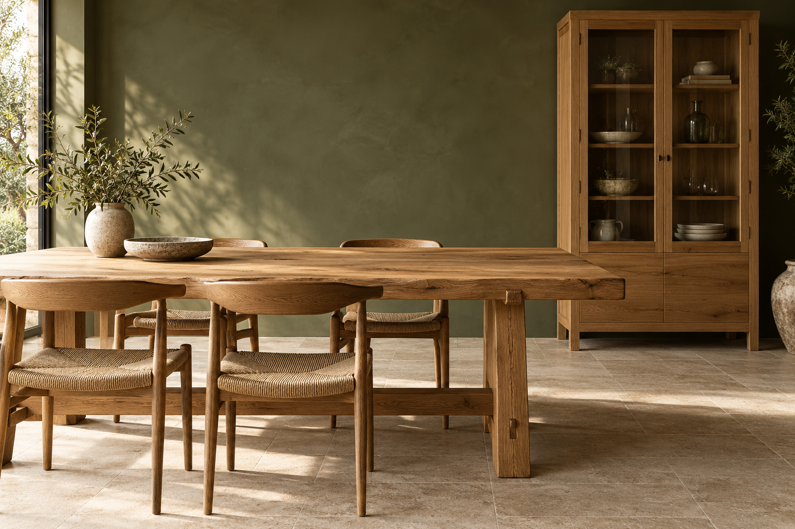

Tafels
Van een fijne eettafel tot een bureau. Verhoudingen en afmetingen die aansluiten op jouw ruimte.

DOET MEUBELS
Jouw idee. Natuurlijk hout. Een eigen karakter.
Ontdek maatwerkVAN EEN IDEE NAAR IETS EIGENS
Een tafel waar je elke dag aan zit. Een kast die rust brengt in de ruimte. Een houten meubel dat niet alleen mooi is, maar precies past bij hoe jij woont.
Bij maatwerk begint het met jouw wensen. De vorm, de afmetingen en het materiaal komen samen in een persoonlijk ontwerp. Rustig in uitstraling, rijk aan detail.
Vertel je ideeNATUURLIJK MATERIAAL. TIJDLOZE VORM.
Laat het hout spreken.
De schoonheid zit in de nerf.
En in de aandacht voor het detail.
RUIMTE VOOR JOUW WENSEN
Van een fijne eettafel tot een bureau. Verhoudingen en afmetingen die aansluiten op jouw ruimte.
Een plek voor wat je wilt bewaren. Met een indeling die logisch voelt en hout dat warmte toevoegt.
Een bank, wandplank of bijzonder meubel. Een schets of foto kan het begin van jouw ontwerp zijn.
VAN EERSTE GESPREK TOT LAATSTE DETAIL
Een mogelijke route voor jouw maatwerkproject.
De ruimte, het gebruik en jouw smaak vormen het vertrekpunt. Verzamel afmetingen en inspiratie.
Bespreek de vorm, houtsoort en afwerking. Maak afspraken over de prijs en planning.
Na akkoord kan het meubel worden gemaakt. Spreek ook af hoe het wordt geleverd en geplaatst.
HET BEGINT MET EEN GESPREK
Vertel je idee, groot of klein.
En geef het de ruimte om iets moois te worden.